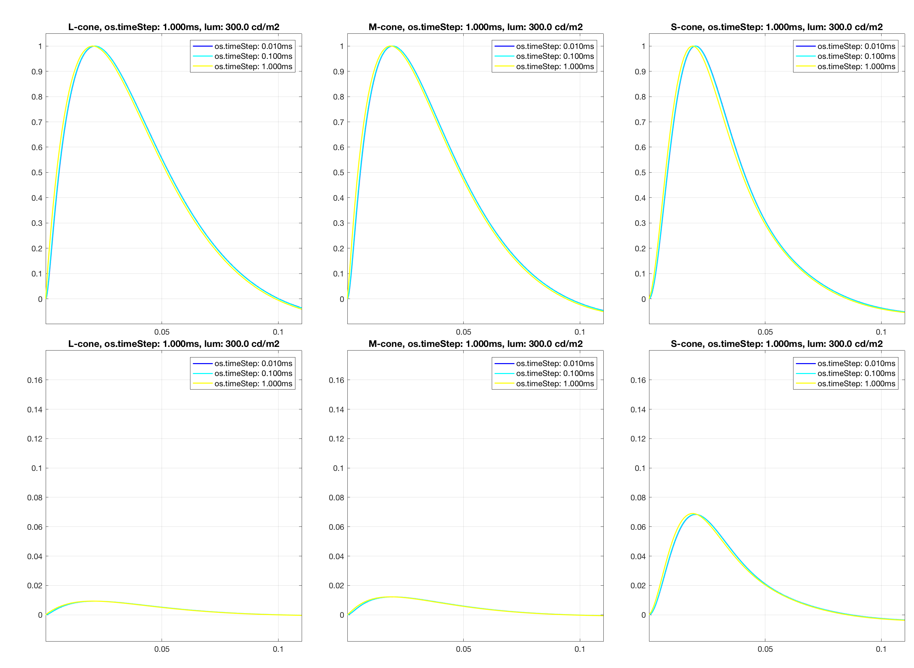

Contents
function varargout = v_osLinearFilters(varargin)
varargout = UnitTest.runValidationRun(@ValidationFunction, nargout, varargin);
end
Function implementing the isetbio validation code
function ValidationFunction(runTimeParams)
Init
ieInit;
stimulusSamplingInterval = 10/1000;
oiTimeAxis = 0:stimulusSamplingInterval:0.1;
oiTimeAxis = oiTimeAxis - mean(oiTimeAxis);
FOV = 1.0;
backgroundLuminances = [30 100 300];
osTimeSteps = [0.01 0.1 1.0]/1000;
stimulusRampTau = 180/1000;
modulationGain = 1.0;
modulationFunction = modulationGain * exp(-0.5*(oiTimeAxis/stimulusRampTau).^2);
noOptics = false;
theOI = oiGenerate(noOptics);
mosaicSize = nan;
integrationTime = 0.1/1000;
photonNoise = 'none';
osNoise = 'none';
theConeMosaic = coneMosaicGenerate(mosaicSize, photonNoise, osNoise, integrationTime, osTimeSteps(1));
for iLum = 1:numel(backgroundLuminances)
fprintf('Computing os linear filters for background luminance %2.1f cd/m2 [%d/%d]\n', backgroundLuminances(iLum), iLum, numel(backgroundLuminances));
theScene = uniformFieldSceneCreate(FOV, backgroundLuminances(iLum));
oiBackground = oiCompute(theOI, theScene);
oiModulated = oiBackground;
theOIsequence = oiSequence(oiBackground, oiModulated, oiTimeAxis, modulationFunction);
eyeMovementsNum = theOIsequence.maxEyeMovementsNumGivenIntegrationTime(theConeMosaic.integrationTime);
instancesNum = 1;
emPaths = zeros(instancesNum, eyeMovementsNum,2);
for iStepIndex = 1:numel(osTimeSteps)
theConeMosaic.os.timeStep = osTimeSteps(iStepIndex);
[~, ~, LMSfilters{iLum, iStepIndex}] = ...
theConeMosaic.computeForOISequence(theOIsequence, ...
'emPaths', emPaths, ...
'currentFlag', true);
end
end
filterTimeAxis = (1:size(LMSfilters{1,1},1))*theConeMosaic.integrationTime;
UnitTest.validationRecord('SIMPLE_MESSAGE', '***** v_osLinearFilters *****');
UnitTest.validationData('LMSfilters', LMSfilters);
UnitTest.validationData('filterTimeAxis', filterTimeAxis);
UnitTest.validationData('backgroundLuminances', backgroundLuminances);
UnitTest.validationData('osTimeSteps', osTimeSteps);
if (runTimeParams.generatePlots)
plotIRs(osTimeSteps, backgroundLuminances, LMSfilters, filterTimeAxis)
end
Computing os linear filters for background luminance 30.0 cd/m2 [1/3]
No current noise added.
No current noise added.
No current noise added.
Computing os linear filters for background luminance 100.0 cd/m2 [2/3]
No current noise added.
No current noise added.
No current noise added.
Computing os linear filters for background luminance 300.0 cd/m2 [3/3]
No current noise added.
No current noise added.
No current noise added.

end
function plotIRs(osTimeSteps, backgroundLuminances, LMSfilters, filterTimeAxis)
subplotPosVectors = NicePlot.getSubPlotPosVectors(...
'rowsNum', 2, ...
'colsNum', 3, ...
'heightMargin', 0.04, ...
'widthMargin', 0.05, ...
'leftMargin', 0.05, ...
'rightMargin', 0.00, ...
'bottomMargin', 0.04, ...
'topMargin', 0.04);
coneNames = {'L', 'M', 'S'};
hFig = figure(1); clf;
set(hFig, 'Position', [10 10 1380 1010], 'Color', [1 1 1]);
colorIR = (jet(numel(osTimeSteps))).^2;
for iLum = 1:numel(backgroundLuminances)
legends = {};
for iStepIndex = 1:numel(osTimeSteps)
legends{numel(legends)+1} = sprintf('os.timeStep: %2.3fms', osTimeSteps(iStepIndex)*1000);
color = squeeze(colorIR(iStepIndex,:));
for coneIndex = 1:3
subplot('Position', subplotPosVectors(1,coneIndex).v);
normFilter = squeeze(LMSfilters{iLum, iStepIndex}(:,coneIndex));
normFilter = normFilter / max(normFilter);
plot(filterTimeAxis, normFilter, 'k-', 'Color', color, 'LineWidth', 1.5);
if (iStepIndex == 1)
hold on;
end
if (iStepIndex == numel(osTimeSteps))
hold off;
end
set(gca, 'XLim', [filterTimeAxis(1) filterTimeAxis(end)], 'YLim', [-0.1 1.05], 'YTick', (0:0.1:1.0), 'XTick', (0:0.05:0.5), 'FontSize', 12);
grid on; box on;
hL = legend(legends);
set(hL, 'FontSize', 12);
title(sprintf('%s-cone, os.timeStep: %2.3fms, lum: %2.1f cd/m2', coneNames{coneIndex}, osTimeSteps(iStepIndex)*1000, backgroundLuminances(iLum)), ...
'FontSize', 14, 'FontWeight', 'bold');
subplot('Position', subplotPosVectors(2,coneIndex).v);
filter = squeeze(LMSfilters{iLum, iStepIndex}(:,coneIndex));
plot(filterTimeAxis, filter, 'k-', 'Color', color, 'LineWidth', 1.5);
if (iStepIndex == 1)
hold on;
end
if (iStepIndex == numel(osTimeSteps))
hold off;
end
set(gca, 'XLim', [filterTimeAxis(1) filterTimeAxis(end)], 'YLim', [-0.1 1.0]*0.18, 'YTick', (0:0.1:1.0)*0.2, 'XTick', (0:0.05:0.5), 'FontSize', 12);
grid on; box on;
hL = legend(legends);
set(hL, 'FontSize', 12);
title(sprintf('%s-cone, os.timeStep: %2.3fms, lum: %2.1f cd/m2', coneNames{coneIndex}, osTimeSteps(iStepIndex)*1000, backgroundLuminances(iLum)), ...
'FontSize', 14, 'FontWeight', 'bold');
end
drawnow
end
end
end
function theConeMosaic = coneMosaicGenerate(mosaicSize, photonNoise, osNoise, integrationTime, osTimeStep)
theConeMosaic = coneMosaic;
if isnan(mosaicSize)
theConeMosaic.rows = 1;
theConeMosaic.cols = 3;
theConeMosaic.pattern = [2 3 4];
else
theConeMosaic.setSizeToFOV(mosaicSize);
end
theConeMosaic.noiseFlag = photonNoise;
theConeMosaic.integrationTime = integrationTime;
theOuterSegment = osLinear();
theOuterSegment.noiseFlag = osNoise;
theOuterSegment.timeStep = osTimeStep;
theConeMosaic.os = theOuterSegment;
end
function theOI = oiGenerate(noOptics)
if (noOptics)
theOI = oiCreate('diffraction limited');
optics = oiGet(theOI,'optics');
optics = opticsSet(optics,'fnumber',0);
optics = opticsSet(optics, 'off axis method', 'skip');
theOI = oiSet(theOI,'optics', optics);
else
theOI = oiCreate('human');
end
end
function uniformScene = uniformFieldSceneCreate(FOV, meanLuminance)
uniformScene = sceneCreate('uniform equal photon', 128);
uniformScene = sceneSet(uniformScene, 'wAngular', FOV);
uniformScene = sceneSet(uniformScene, 'distance', 1.0);
uniformScene = sceneAdjustLuminance(uniformScene, meanLuminance);
end